第一步：点击待命按钮，开始待命，开始听单。（说明：后台手工派单不受此状态影响）
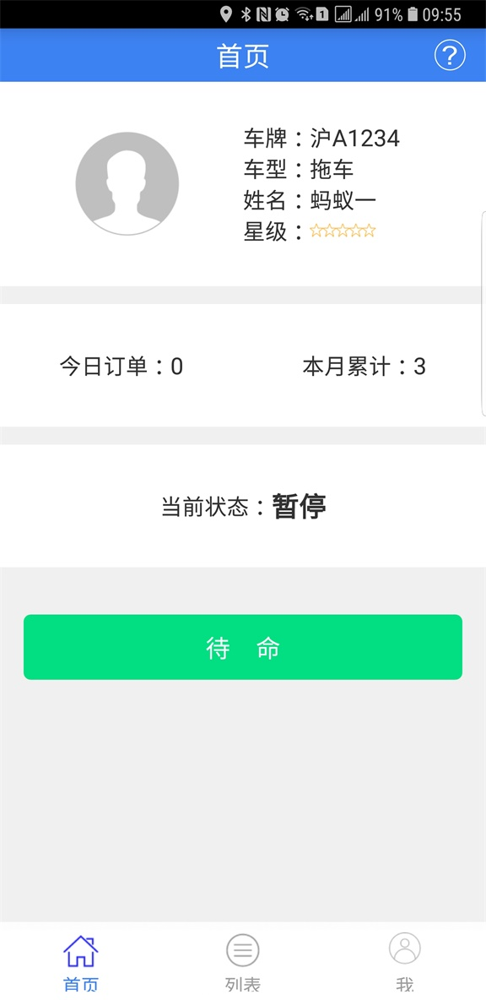第二步：有新的救援工单推送到救援师傅手中时，救援师傅可选择立即查看或者稍后查看（点击稍后查看，救援订单会默认接受救援）
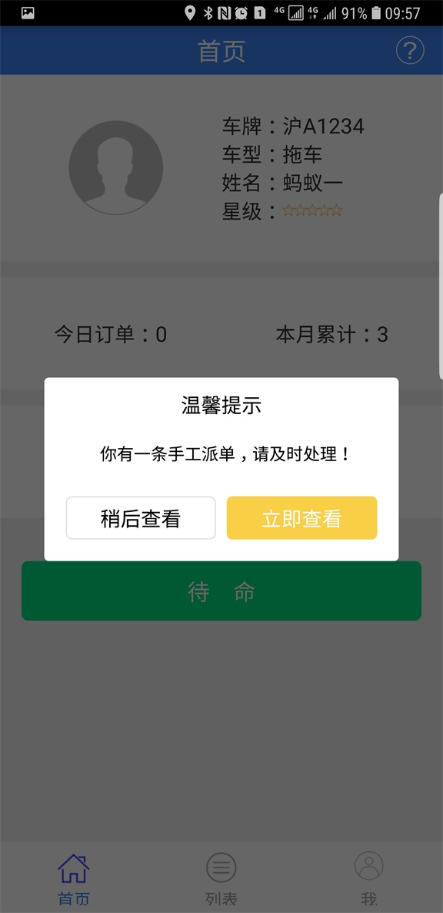第三步：立即查看后，师傅可选择结束或者拒绝救援工单
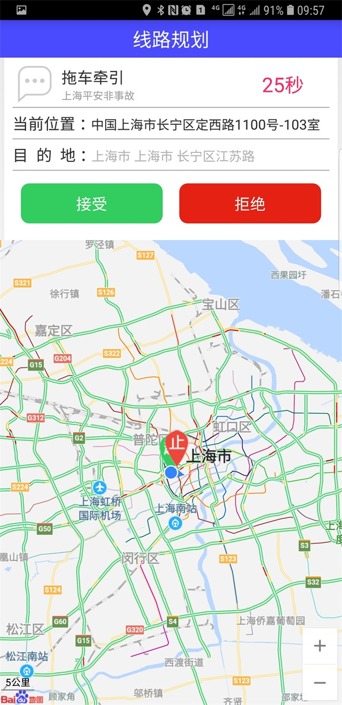第四步：当师傅接受救援工单后准备开始前往故障地点时，务必点击出发按钮！
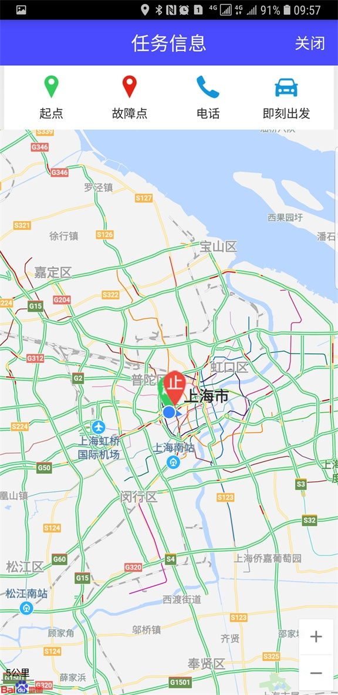第五步：当救援师傅到达救援地点后，点击到达按钮，系统会计算历程
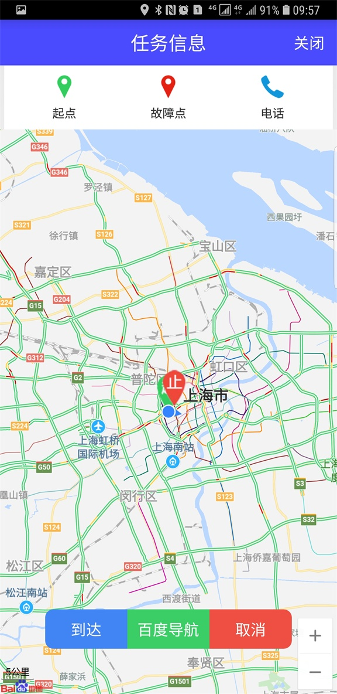第六步：按照提示信息上传救援照片！所需要救援图片视服务项不等！
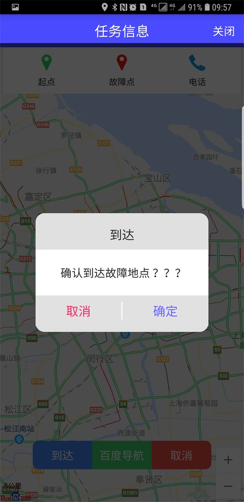 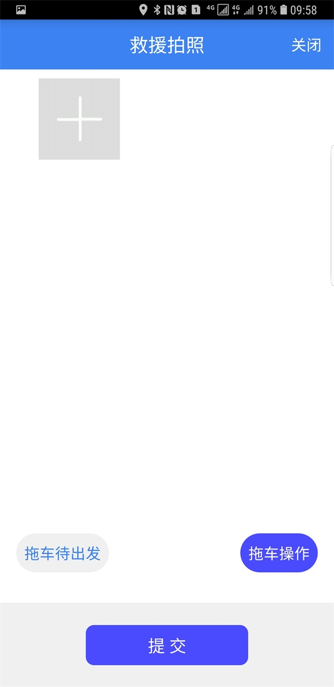第七步：点击救援操作，救援工实施拖车操作！（需要拍摄两张照片才能进行拖车操作）
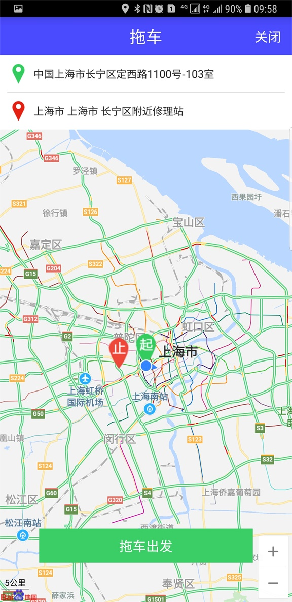第八步：点击到达，停止计算拖车里程数，点击关闭！
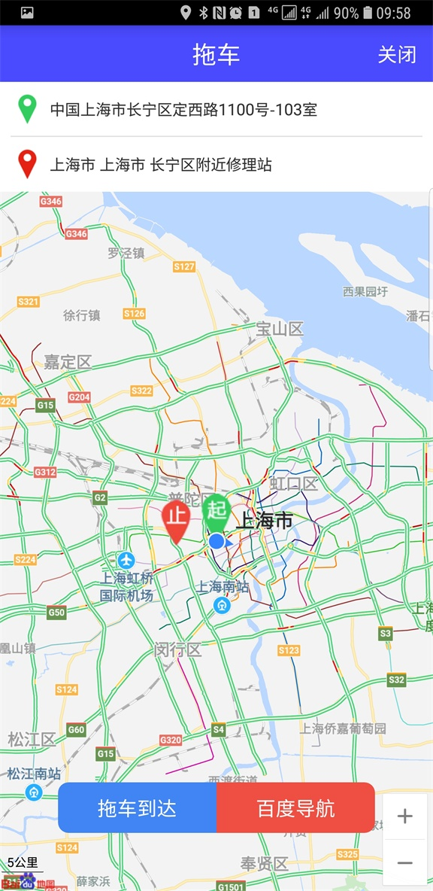 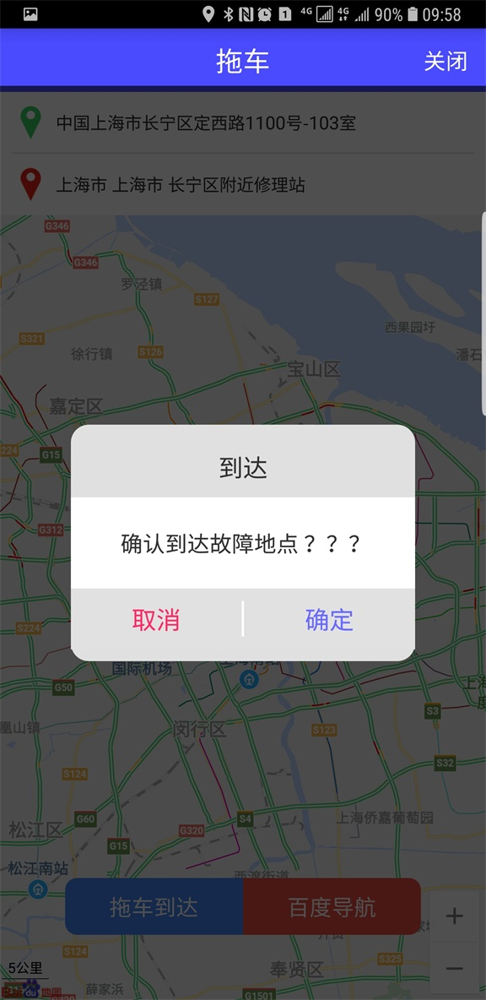 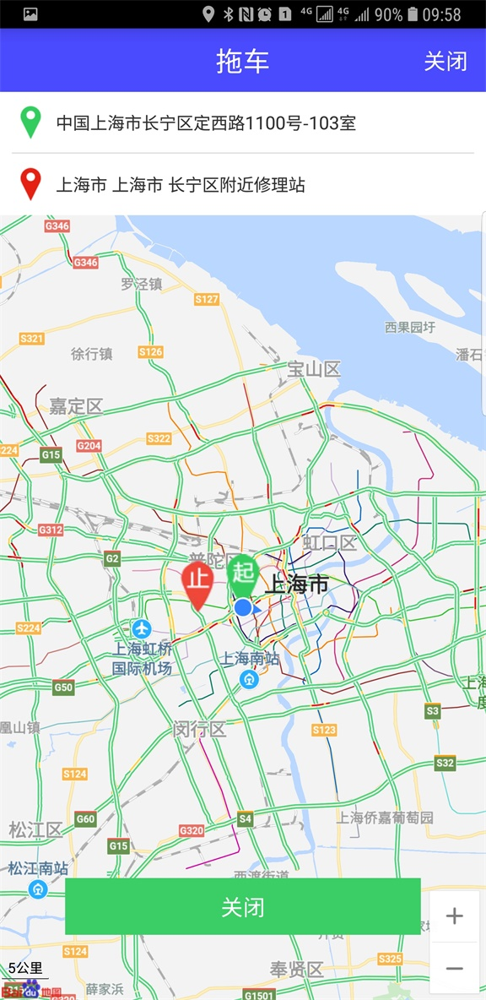第九步：回到拍照页面，继续拍照操作！
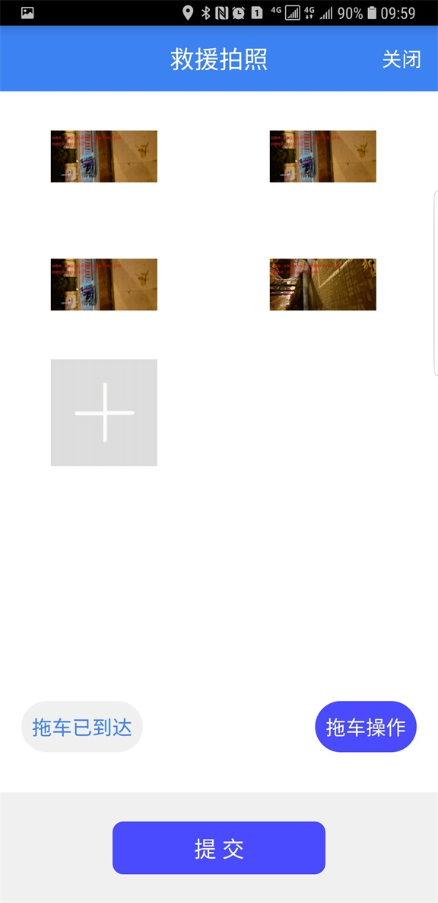第十步： 实施完救援服务，请客户给出救援的满意度
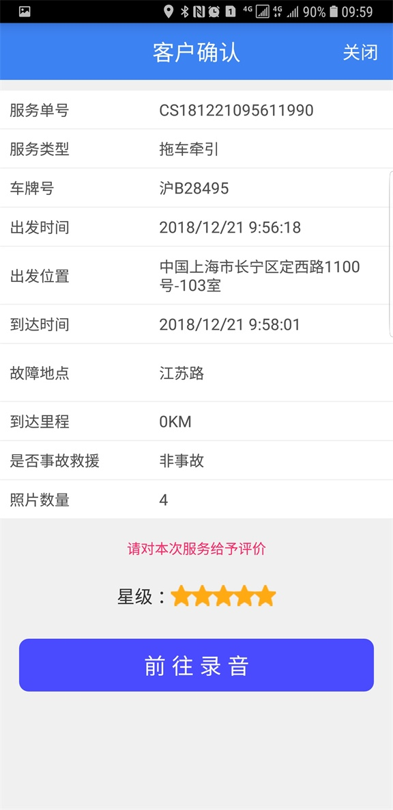第十一步：点击录音按钮，开始录音，请客户给出满意度录音信息！点击结束录音确认上传！完成救援工单
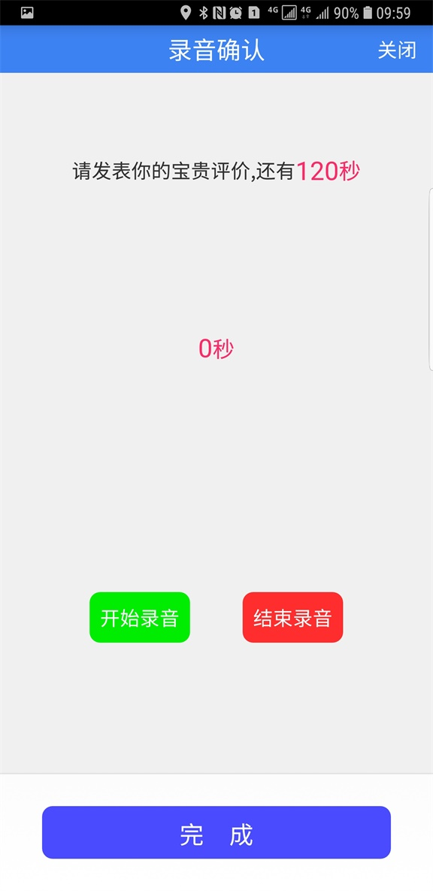 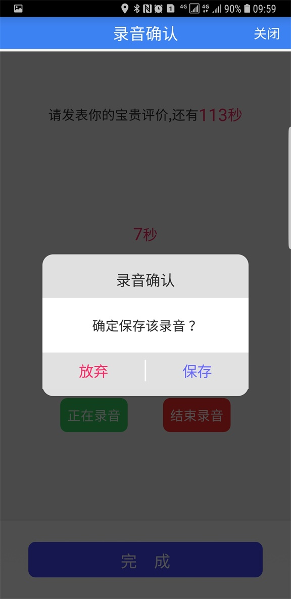 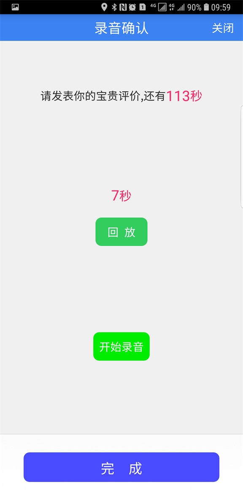